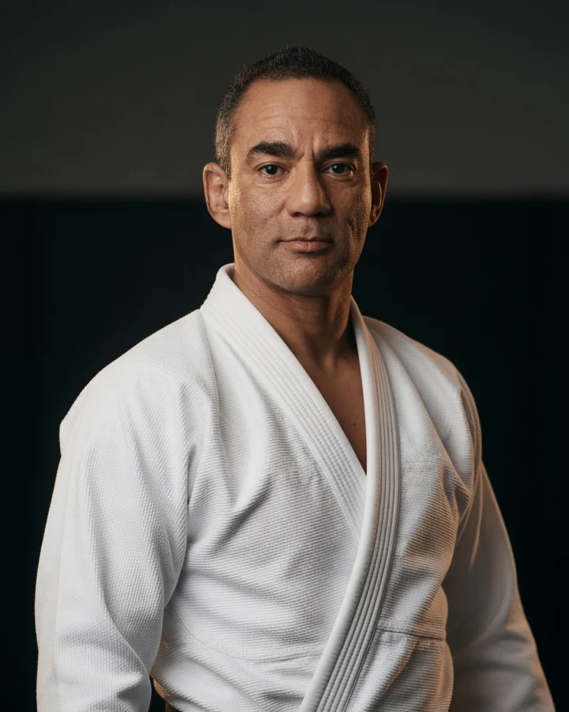
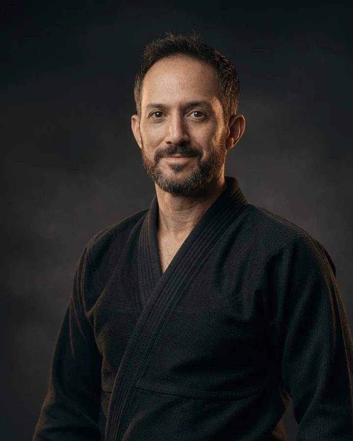
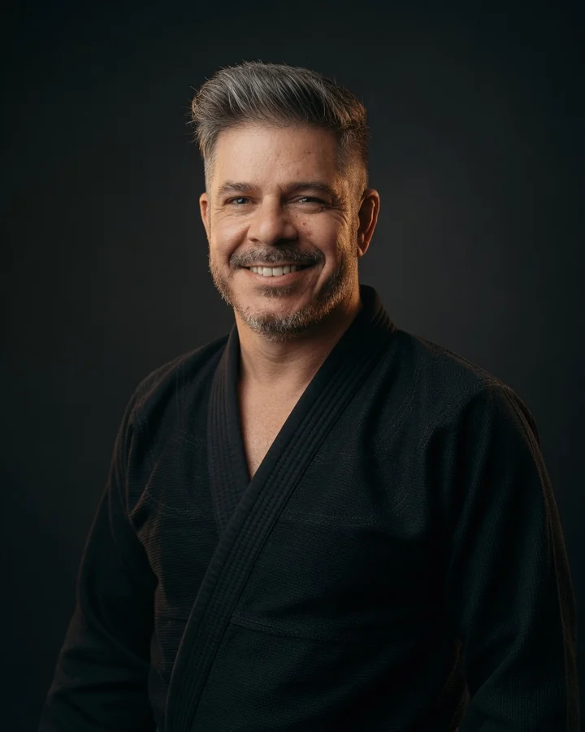
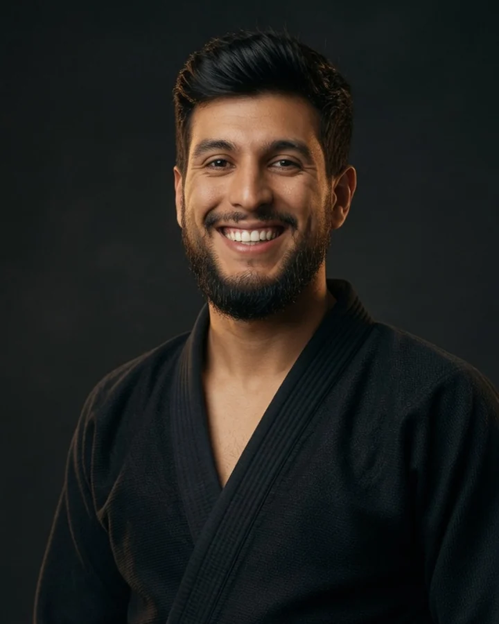
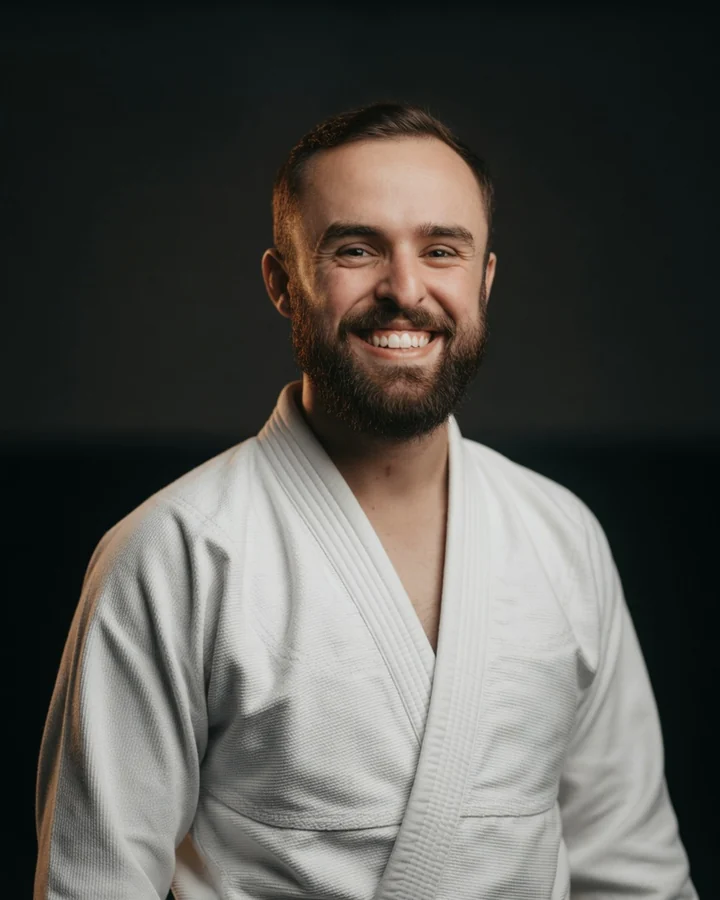
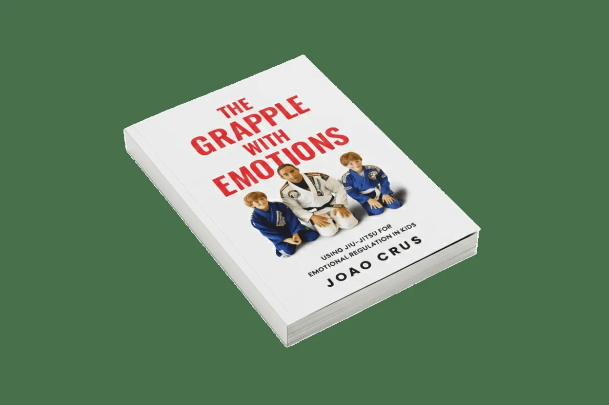
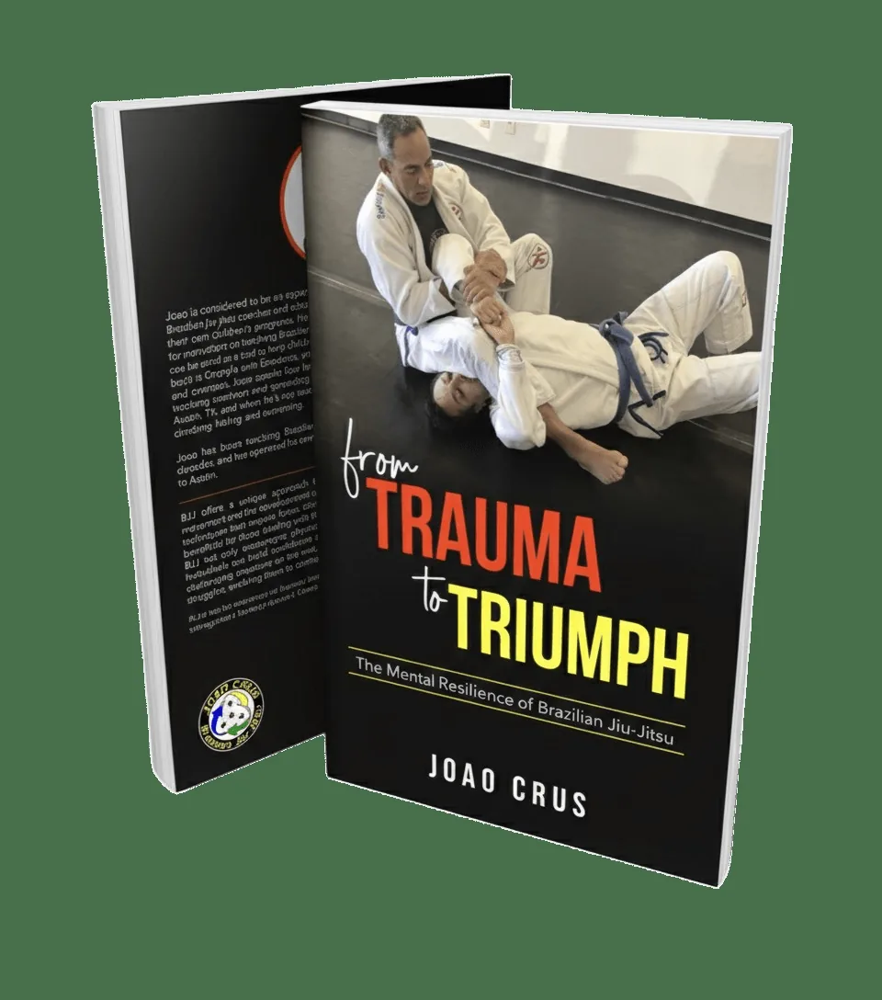

Joao Crus · Head Instructor
25 YEARS OF TEACHING PEOPLE.
Brazilian-born black belt who trained with Carlson Gracie in Brazil, author, academy owner, and coach focused on the person before performance.
 Founded in 2003
Founded in 2003
Comparison preview · AI head-and-shoulders portraits
Experience across the room
THE COACHING TEAM.
Different backgrounds. One shared standard: teach clearly, train responsibly, and help every student grow.

Black belt
Justin Nielsen
More than ten years under Joao, with a family-centered approach to teaching.
Meet Justin →
Black belt
Kevin La Barre
Self-preservation consultant and business leader focused on composure under pressure.
Meet Kevin →
Purple belt
Christian Ramirez
Coach, competitor, and military-background instructor.
Meet Christian →
Brown belt
Harrison Owens
Thirteen years of experience across wrestling and Brazilian Jiu-Jitsu.
Meet Harrison →The method
RELATIONAL AND PSYCHOLOGICAL FIRST. PHYSICAL SECOND.
Joao uses BJJ as a practical setting for confidence, regulation, boundaries, and resilience, not only techniques and belts.
BlackBelt
2003Founded
2Books
25+Years
The tradition Joao carries
A LINEAGE YOU CAN SEE IN THE TEACHING.
Not a borrowed name. A standard learned directly, tested on the mat, and carried forward with purpose.
Carlson Gracie at Joao Crus BJJ · December 2005
Joao is from Brazil and trained there with Carlson Gracie. Years later, this surviving footage captured Carlson teaching alongside Joao inside the Dripping Springs academy Joao founded.
Carlson’s branch of the Gracie tradition became known for initiative, pressure, and technique proven through hard training. Joao’s connection to Ricardo De La Riva added another lesson: preserving an art also means continuing to discover.
How the tradition lives here
CAPABLE. CALM. RESPONSIBLE.
The goal is not aggression. It is the ability to meet pressure without panic, use skill without ego, and carry strength with restraint.
PRESSURE REVEALS.
Technique should remain usable when resistance is real, the room is difficult, and composure matters.
TRADITION EVOLVES.
Respect for Jiu-Jitsu does not mean freezing it in time. Adaptation is part of the inheritance.
STRENGTH SERVES.
Joao applies real technique and responsible pressure to confidence, boundaries, emotional regulation, and growth.
Read the archival video description
This 52-second concept cut combines five clips from Joao’s public archive. They show Carlson instructing, correcting position, and demonstrating technique with Joao during a December 2005 seminar at Joao Crus BJJ in Dripping Springs. The original seminar audio is intentionally preserved.
Watch the original archive clips
Author + educator
WORDS BEYOND THE MAT.

Grapple with Emotions
Helping children build emotional regulation through BJJ principles.

From Trauma to Triumph
Resilience, recovery, and growth through Brazilian Jiu-Jitsu.